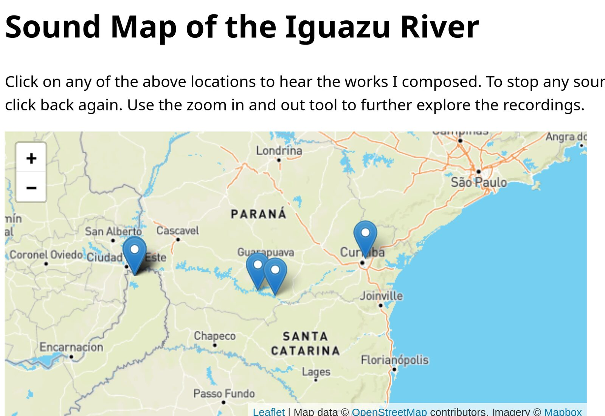
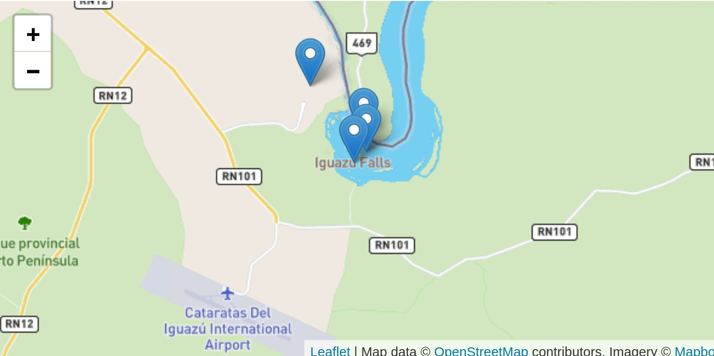

Soundmap of the Iguazu River
Description
The proposed installation intends to display aurally the diversity of sounds of the Iguazu River located in the state of Paraná, south of Brasil. Through an interactive geolocalized soundmap hosted in: www.sonsdorioiguazu.art.br any participant can access and with the click of a mouse and hear a work composed out of the different audios recorded there. A text and an image will help contextualize each location for further understanding since there are some audio testimonies in Portuguese and Kaingang an indigenous language as well as other particular considerations such as level of water, meteorological conditions, organizations involved, among many others that are vital for the full understanding and enjoyment of the project.
There are many motivations, after extensive research and experience I have found that sounds of water provide many many wonderful benefits for the body, stories around rivers bring identity and memory and any opportunity expand listening is always welcomed in these troubled and uncertain times.
On the other hand, another motivator is the current state of the river that after three years doing field work, I have found it to be in a terminal state and it gets even worse since it reached low water levels that hitted historical figures in 2022 as well as it´s pollution that unfortunatelly instead of decreasing is increasing. This brings a big irony for the city of Curitiba (in its metropolitan area the river is born) that has an international reputation of being a green city, but pollutes the Iguazu river not only due to its sewage but also because there is a major oil refinery as well many other industries.
The constant use of agrotoxics for the big agrobusiness that relies on monocrops in the state of Parana and the massive deforestation the region has suffered also contribute to the decaying of the river. The use of the river to generate energy by the creation of hidroelectric power plants also presents a risk to the water shortage and a struggle for indgenous communities that relied on fishing and natural water cycles for their activities and cosmology. There are also geopolitical tensions in the area, for example the location of the river when it ends joining the Parana river and where the Igauzu Falls are is in the triple frontier with Argentina and Paraguay a region with one of the biggest underwater reserves in the world1 whose land has been acquired among others by the Bush family and other foreign major players.
The region has also recently being of great geopolitical interest since it set up an Integrated Border Operations Center2 sponsored by the FBI (Federal Bureau of Investigation) and inspired by a similar center displayed by the DEA (Drugs Enforcement Agency) at the US Mexico Border in Foz the Iguaçu the Brazilian city where the Iguazu River and the Parana River meet.
A region and a river (Iguazu) that has and will face so many changes are worth dedicating time to understand it and dive deep to find its wisdom and make it available to everyone because its not only tragedy and distopia, there is also hope for healing and regenerating.
Finally, a huge motivation is this year’s NIME theme about decolonizing musical interfaces that fits well into my research values that I hope to be reflected in the installation since the problematics mentioned above cannot be addressed with the traditional Anglo European epistemologies and mainstream technologies in order to be a critical project with a wiggle room for autonomy and coherence.
I have relied on the following authors: Annea Lockwood, Steven Feld, Gregory Bateson, Giles Delleuze and Felix Guattari, Michel DeCertau, Eduardo Galeano, Eduardo Viveros de Castro, Debora Danowski , Jason Hickel, Walter Benjamin, Raymond B. Craib, Gavin Menzies and Jairo I Funez among others. This, in order to establish a way of thinking that is both critical to western colonialism as well as to a way to approach similar projects with an understanding of the communities that is not hierarchical3 such as: cartography and its limitations and potential, the ecological crisis we are facing and a Latin American perspective on how our history has been usurped4 and how projects like this contribute to the creation of new narratives that reveal both the injustices as well as the dignity of our habitants.
I will now expand the term decolonize in order to establish my views around it and its relation to this installation.
According to scholar Jairo I Fúnez-Florez:
“The interdisciplinary Latin American decolonial turn aims to counter Eurocentric interpretive frameworks and historiographies by thinking from and with other genealogies of thought and practice (Escobar, 2007; Tlostanova and Mignolo, 2012), such as dependency theory, anti-colonial thought, and theology and philosophy of liberation (Casanova, 1965; Césaire, 2000; Dussel, 1980; Fals-Borda, 1970; Fanon, 1963; Frank, 1970; Prebisch and Cabañas, 1949). Decolonial theory may be distinguished from postcolonial theory since the latter draws heavily on postmodern and post-structural thought and initiates its historiographic reinterpretation and literary criticism with the English and French colonial experience during the enlightenment (Bhambra, 2014). The former, however, conceives of the modern/colonial world system as a structure, or better yet, a colonial matrix of power that initiated its global articulation in 1492 during the renaissance (Tlostanova & Mignolo, 2012). Although both articulate important critiques of colonialism, they vary in temporal depth and geographic scope. Decolonial theory extends its analyses to other histories and geographies constitutive of modernity/coloniality, which have been left undertheorized by postcolonial studies’ anglocentric and francocentric perspectives of colonialism (Coronil, 2008; Hulme, 2008). Decolonial thought, moreover, emphasizes the discourses, institutions, and social practices that enabled the construction of Western Europe’s geo-cultural identity and hegemonic geopolitical position (Coronil, 1996; Dussel, 1996; Quijano, 2000), integrating thus the material with the symbolic dimensions of domination” (Fúnez-Florez, 2022)
Fúnez-Flores also states that in an attempt to decolonize: social, cultural, geopolitical, existential, cosmological and ecological realities need to be reframed. With this context about decolonization what I have percived in the particular case of the soundmap of the iguazu river is that an undestanding of its problematics requires an integration of the realities mentioned above as a depature and this has been my aim in trying to comprehend as much as possible the whys and the whoms are affected in this bounded terrotory.
I have managed to establish a link between the environmental evidence of the state of the river with the testimonies I have gathered that give an account of social, cultural, existential as well as what I mentioned early on the geopolitical and economic issues revolving around it. Also an archival research about the Iguazu’s foundations and myths was conducted giving a voice also to indigenous communities. All this feeds the inspiration-creation process of the instalation.
Going back to Fúnez-Flores and his thoughts about western institutions and social practices it is worth stating how an institution such as NIME has opened up its production of knowledge further into underrepresented communities from countries of the periphery by designing a menthorship program that I had the privilege to be selected. I worked with Charlie Roberts for several months, this allowed us to meet and discuss and finally execute a website/installation.
In our view, mine as someone who has worked in projects such as Creative Commons and who has been close to open source communities and Roberts, an artist and researcher involved in web, sonic interaction projects we saw how vital it is to embrace, support and if possible participe and implement open source when having a choice to decide either for these type of solution vs closed source technologies. My mentor provided tons of material and tools and we started to build and at some point we decided on the obious: that Google had to come out, instead we focused on all these available tools that where build by people or institutions not only carying for profit. We came up with the following solution.
Realization
In terms of realization we decided to work with JavaScript and Open Street Map, we also applyed libraries for both mapping (Leaflet) and audio (Gibber), finally we used Mapbox for the contribution of the imaging.
The proposed methods of experiencing the installation by an online visitor are to interactively navigate through the instructions that trigger sounds and provide textual and visual information on each location of the river facilitated by a map and differentiated through a marker. It is advised to fully focus on deep listening what is heard to be able to enjoy it and learn from it.
Technical information and system requirements
Internet connection, browser (not Safari) , mouse, headphones or speakers
Media
You can find the installation accessing the following site:
Here are a few pictures of of its appearance:




References:
Akerman, James R., ed. Decolonizing the Map. London: Univeristy of Chicago Press, 2017.
Annea Lockwood. A Sound Map of the Danube. New York, NY: Lovely Music, Ltd., 2008.
Bateson, Gregory. Pasos Hacia Una Ecologia de La Mente. Buenos Aires: Lumen, 1991.
Benjamin, Walter. A obra de arte na época de sua reprodutibilidade técnica. Zouk, 2012.
BRASILWIRE. “The FBI, the Fusion Center, and the Far Right: US Creep in Brazil.” BRASILWIRE, May 26, 2020. https://www.brasilwire.com/fbi-sergio-moro-publica/?utm_source=pocket_mylist.
Certau, Michel de. The Practice of Everyday Life. Univerity of California Press, 2002.
Danowski, Deborah, and Eduardo Viveros de Castro. ¿Hay Un Mundo Por Venir? Buenos Aires: Caja Negra Editora, 2019.
Deleuze, Giles, and Felix Guattari. A Thousand Plateaus Capitalism and Schizoprenia. Minea`polis: University of Minnesota Press, 1987.
Feld, Steven. “Acoustemology.” Duke Univeristy Press Keywords in Sound (2015).
Feld, Steven, and Keith H. Basso. Senses of Place. Santa Fe: SAR Press, 1996.
Fúnez-Flores, Jaime I. “Decolonial and Ontological Challenges in Social and Anthropological Theory.” Theory, Culture and Society, 2022. https://journals.sagepub.com/doi/10.1177/02632764211073011
Galeano, Eduardo. Memorias de Fuego. I. Los Nacimientos. Madrid: Siglo Vientinuo Editores , 1991.
Hickel, Jason. “The Racist Double Standards of the International Devolpment.” ALJAZEERA, July 13, 2020. https://www.aljazeera.com/opinions/2020/7/13/the-racist-double-standards-of-international-development.
Jalife Rame, Alfredo. Las Guerras Globales Del Agua: Privatización y Fracking, 2015.
Lane, Cathy, and Angus Carlyle. In the Field: The Art of Field Recording. London: Wire, 2012.
Marjin, Haverbeke. Eloquent Javascript: A modern introduction to Programming. San Francisco, No Starch Press. 2015
Menzies, Gavin. 1421: The Year China Discovered America. New York City: Harper Perennial, 2004.
Acknowledgments
This work was supported by: CAPES (Coordenação de Aperfeiçoamento de Pessoal de Nível Superior). , UFPR (Universidade Federal do Parana) DeArtes (Setor, Comunicação, Design e Artes).
The author will like to thank: Fundação SOS Mata Atlantica, COPEL (Companhia Paranaense de Energia), Instituto Chico Mendez de Conservação da Diversidade, SANEPAR (Companhia de Saneamento de Parana), Secreataría de Educação e Esporte de Parana. NIME Menthorship program and Charlie Roberts. Testimonies: Diego Saldanha, Florencio Tupã Nhé, Karime Massignan, Dago Woehl.
Footnotes
Alfredo Jalife Rame, Guerras globales del agua, privatización y fracking
↩https://www.brasilwire.com/fbi-sergio-moro-publica/?utm_source=pocket_mylist, Last accessed on January 2022
↩“For 500 years, capital has relied on the devaluation of lives in the global South, whether it be through colonisation, dispossession, genocide and slavery, or, more recently, through structural adjustment programmes, free trade agreements and corporate land grabs that depress the costs of Southern labour and resources”. (Hickel, 2020). Accessed in 05/22 https://www.aljazeera.com/opinions/2020/7/13/the-racist-double-standards-of-international-development
↩Throughout the centuries, Latin America has not only suffered the plundering of gold and silver, saltpetre and rubber, copper and oil: it has also suffered the usurpation of memory. From early on it has been condemned to amnesia by those who have prevented it from being. The official Latin American history is reduced to a military parade of heroes with uniforms fresh from the dry cleaners. (Galeano, 1991). Translation made by the author.
↩